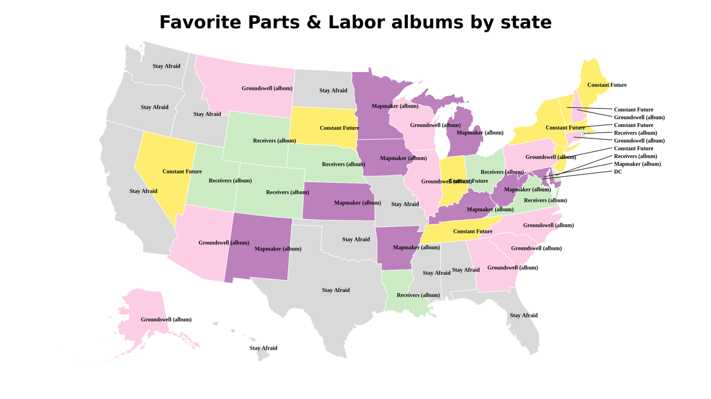
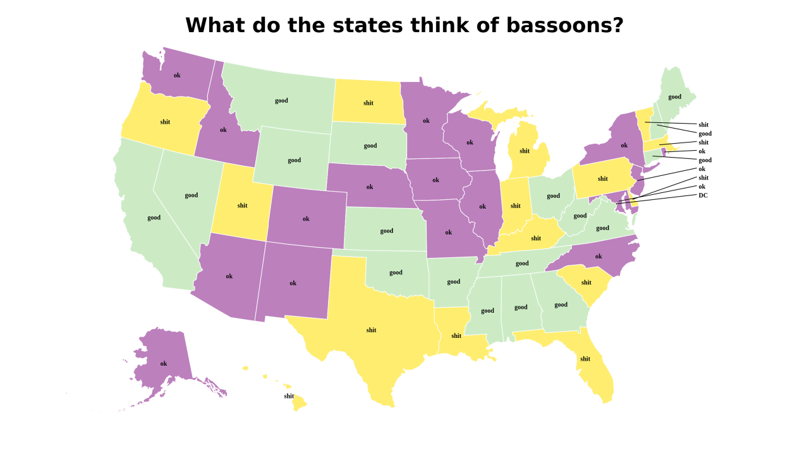
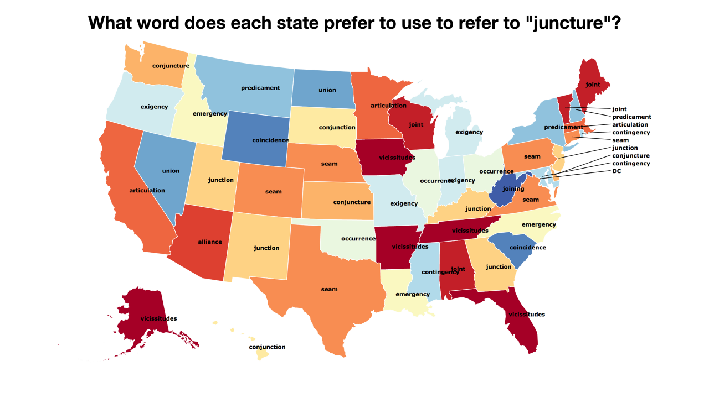
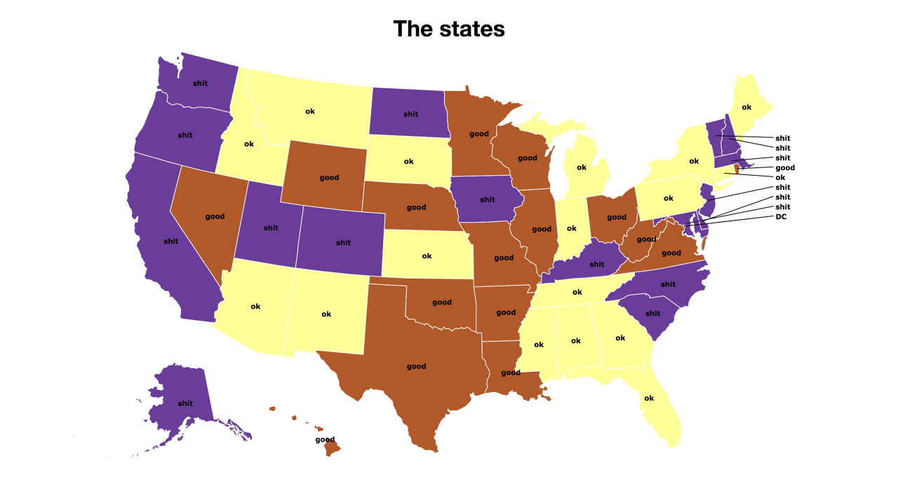

Fact maps!
2018-4-23 11:19:18

Favorite Parts & Labor albums by state
2018-4-23 10:19:15

What do the states think of bassoons?
2018-4-23 09:48:53

What word does each state prefer to use to refer to "juncture"?
2018-4-23 09:44:30

The states
0